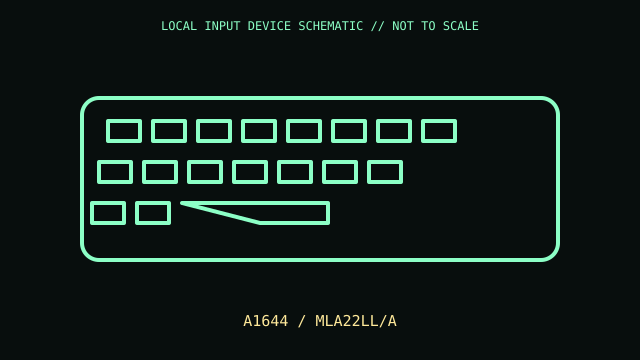

[ KEYBOARDS AND INTEGRATED POINTING DEVICES // IDENTIFIED COMPONENT ]
Apple Magic Keyboard (A1644)
Compact rechargeable Bluetooth keyboard with Lightning connector.

MODEL IDENTIFICATION: A1644 / MLA22LL/A. Confirm the printed SKU, revision, bundle, region, and included accessories before repair or compatibility claims.
Model specifications
| Catalog leaf | Keyboards and integrated pointing devices |
|---|---|
| Exact model / identifier | A1644 / MLA22LL/A |
| Mechanism and primary specifications | Scissor mechanism; Bluetooth; Lightning port for charging and pairing/data when connected by cable; internal rechargeable battery. |
| Compatibility and interface caveats | A1644 is 2015 compact Magic Keyboard, not later Touch ID or USB-C generations. Full media/function key behavior is Apple OS dependent. |
| Revision identification | Record the full label and software/firmware revision. Similar product-family names may use different protocols, components, connectors, or bundled accessories. |
Preservation and service
Use a suitable Lightning cable; avoid prying sealed battery enclosure and keep key wells dry.
Separate observed condition and test setup from vendor-published specifications; record host OS, driver/app version, cables, adapters, and accessories.
Primary manufacturer sources
- Apple Magic Keyboard technical specificationsManufacturer documentation; verify the exact SKU, revision, region, and accessories against the unit label.
- Apple keyboard manualsManufacturer documentation; verify the exact SKU, revision, region, and accessories against the unit label.
Manufacturer support pages can change; retain the applicable manual and its revision in the physical equipment record.